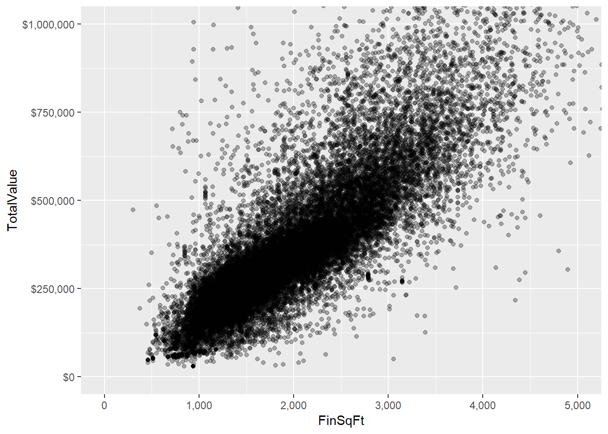

Interactive Visualization and Web Apps with Shiny
Get Ready!
- Download shinR.zip to your computer. It contains an R script and the content of this page as a slide deck. Save it somewhere easy to find.
- Unzip shinR.zip. (Mac: Double click the zipped file. Win: Right-click on the zip file and select “Extract All…”)
What is shiny?
- shiny is a package that provides functions for converting R code into interactive web applications
- The applications it creates can be run in RStudio; they don’t have to be hosted on a web site
- Developed by RStudio
- Doesn’t require web development skills but does require a good grasp of R
Why use shiny?
Create interactive apps…
- for teaching statistical concepts: Example
- for using and visualizing statistical models: Example
- for exploring data or creating reports: Example
See more at the shiny Gallery: https://shiny.rstudio.com/gallery/
Agenda
- Examine the RStudio shiny app template
- Build a basic shiny app
- Build a more advanced shiny app to explore a linear model of the Albemarle County Homes Data
Installing shiny
shiny is an R package, so install as you would any other package:
install.packages("shiny")At the beginning of any shiny app you will need to load shiny.
library(shiny)RStudio provides a shiny template to help us get started building a shiny app.
Suggested steps for building a shiny app
- Start work in a normal R script developing code that does what you want; identify arguments or settings that you would like to make interactive
- (optional) Draw on paper a rough sketch of what the app might look like
- Start a shiny app using RStudio template: File…New File…Shiny Web App…
- Copy in your code from step 1 and modify with shiny code to convert to interactive app
Simple motivating example
Zoom in on scatter plot of TotalValue vs FinSqFt and adjust alpha setting (transparency of points).
library(tidyverse)
homes <- readRDS(url("http://people.virginia.edu/~jcf2d/data/albemarle_homes.rds"))
# focus on 6 cities
vars <- c("CHARLOTTESVILLE", "CROZET", "EARLYSVILLE",
"KESWICK", "SCOTTSVILLE", "NORTH GARDEN")
# filter for our cities of interest and homes with at least 1 bedroom and 1 bathroom
homes <- homes %>%
filter(city %in% vars & Bedroom > 0 & FullBath > 0)
# drop unusued levels for city
homes$city <- droplevels(homes$city)
# plot TotalValue vs FinSqFt
ggplot(homes, aes(x = FinSqFt, y = TotalValue)) +
geom_point(alpha = 0.3) +
scale_x_continuous(labels = scales::comma) +
scale_y_continuous(labels = scales::dollar) +
coord_cartesian(xlim = c(0,5000),ylim = c(0,1e6)) 
The R code
ggplot(homes, aes(x = FinSqFt, y = TotalValue)) +
geom_point(alpha = 0.3) +
scale_x_continuous(labels = scales::comma) +
scale_y_continuous(labels = scales::dollar) +
coord_cartesian(xlim = c(0,5000),ylim = c(0,1e6))It would be nice to interact with the alpha, xlim and ylim arguments.
Sketch of a possible app

Let’s build that shiny app!
Here’s how we get started:
- In RStudio, go to File…New File…Shiny Web App…
- In the Application Name field, enter a name for your application. (Example: “homes_plot”) This will become the name of the folder where your shiny app is saved.
- Leave Application Type set to “Single File (app.R)”
- Browse to where you want to save your shiny app. In that location a folder will be created with the name of your application. In that folder will be a file called “app.R”. Do not change the name of that file!
New Shiny Web App dialog

Shiny Web App template
When you start a new shiny web app you are a provided a working app as a template to help get your started. Feel free to run it and see what it does by clicking the Run App button.
It’s a simple app, but it provides the core shiny components we need to start building our own shiny app.
- the user interface (an object called
ui) - the server logic (an object called
server; the R code of our app) - the function call
shinyApp(ui = ui, server = server)
Building your shiny app means modifying the user interface, server, and comments.
Default user interface: sidebar layout

This is the layout we’ll use in this session. It’s very functional. See the shiny cheat sheet for several other layouts. (RStudio: Help…Cheatsheets…)
Inputs
- Inputs allow us to collect values from the user
- These can be numeric fields, radio buttons, pull down lists, slider bars, check boxes, action buttons, text fields, etc
- The shiny template provides us with a slider bar, created with the
sliderInputfunction

- The value collected is input into our R code as
input$bins
List of shiny inputs

Outputs
- The user interface not only collects values from the user but also displays R output, such as plots, tables and statistical summaries.
- The shiny template provides us with plot output, created with the
plotOutputfunction plotOutputis called on"distPlot", which is created in the server portion of the app using arenderPlotfunction."distPlot"is a user-generated name; it could have been called"histogram"- In general, output that is presented in the user interface will be created in the server portion using a
render*function
render and Output functions work together

The RStudio shiny cheat sheet provides a nice summary of render*() and *Output() pairs:

The server
The “server” is a function where the application’s R code is executed. The following process roughly summarizes how a shiny app works:
- user provides input in the user interface (eg, number of bins)
- the input is passed to the server where the R code is processed (eg, create histogram with specified number of bins)
- the output is passed back to the user interface to be displayed (eg, plot histogram)
The server template
Your R code typically goes inside a render* function that creates output to be displayed in the user interface.

Updating the UI controls for our example
We want to create 1 slider input and 4 numeric inputs.

Updating the server for our example
We copy-and-paste our code into the renderPlot function and update the alpha, xlim and ylim arguments. Notice I chose to save the result as output$scatterPlot.

Add data for the app
We also need to include the R code that reads in and prepares the homes data for plotting. Insert under library(shiny) but before we define the UI.

Updating the UI output for our example
Two last steps:
- in the UI section we update the
plotOutputfunction to use"scatterPlot", which we named our plot in the server section.

- Update the plot title as follows:
titlePanel("TotalValue vs FinSqFt")
Try out the app by clicking the Run App button.
The finished app

Congratulations on your first shiny app!
That’s how the development of your first few shiny apps will proceed:
- recognize R code that could be presented as an interactive app
- start a new shiny web app using RStudio
- tweak the template to work with your R code
You are developing an application. Expect it to take time and patience.
Going beyond the RStudio template
The RStudio template is a great foundation for creating basic shiny apps. However shiny offers much more functionality than what is offered in the template.
Let’s look at a few:
- use tabs so we can run multiple shiny apps in a single app
- use HTML to format the look of the app and/or add text
- modularize reactions so we can store values and reduce computation
Multiple tabs
- Using
tabsetPanelandtabPanelwe can create multiple tabs, or pages, for our apps. - Examples:
- an app on one tab and instructions on another tab
- multiple apps, each on their own tab
- an app on one tab, data browser on another tab
- Today our goal is to build a shiny app with two tabs: one to display effect plots and another to calculate expected home values for given specifications.
Example: Minimal tab panel

Example: Different apps on each tab

Using HTML to add text and format look
- HTML is a markup language that web browsers use to render text
- Example:
this is <strong>bold</strong>is rendered as “This is bold” - We can add text to our apps and format the text with HTML
- Most common tags have wrapper functions
- Example:
This is strong("bold")is rendered as “This is bold”
Example: using HTML in shiny app

Modular reactions
- Sometimes we want to modularize code either to reduce computation or prevent other code from executing
- Consider the following example which samples
nnumbers from 1-100, and then sorts in either ascending or descending order according todesc
output$numbers <- renderText({
sort(sample(100, size = input$n),
decreasing = input$desc)
})- changing the
decreasingargument causessampleto execute again and generate a new sample. - We would like to modularize the call to
sampleso we can change sort order without generating a new sample.
Create modular reactions with the reactive function
- The
reactivefunction creates a reactive expression - It caches (or saves) its value and can be called by other code
- Example:
re <- reactive({sample(100, size = input$n)})
output$numbers <- renderText({
sort(re(), decreasing = input$desc)
})- The reactive expression
re()runs when the sample size changes
Our final shiny app
Let’s apply what we learned to build a shiny app that allows us to explore a complex linear model based on the Albemarle County homes data.
Click here to access the exercise.
Or go to https://at.virginia.edu/2SS695y
Where to host Shiny apps
To put your Shiny app on the web, it needs to be hosted on a Shiny server. Three options are available:
- Deploy to the cloud: http://www.shinyapps.io/ Free and paid options available
- Deploy on-premises (open source): Shiny Server
- Deploy on-premises (commercial): Shiny Server Pro
Options 2 and 3 require setting up your own server. There are some articles on the web about how to do it with Amazon Web Services (AWS).
Resources
Written and video tutorials:
https://shiny.rstudio.com/tutorial/
Gallery of example shiny apps:
https://shiny.rstudio.com/gallery/
Building Shiny apps - an interactive tutorial
https://deanattali.com/blog/building-shiny-apps-tutorial/